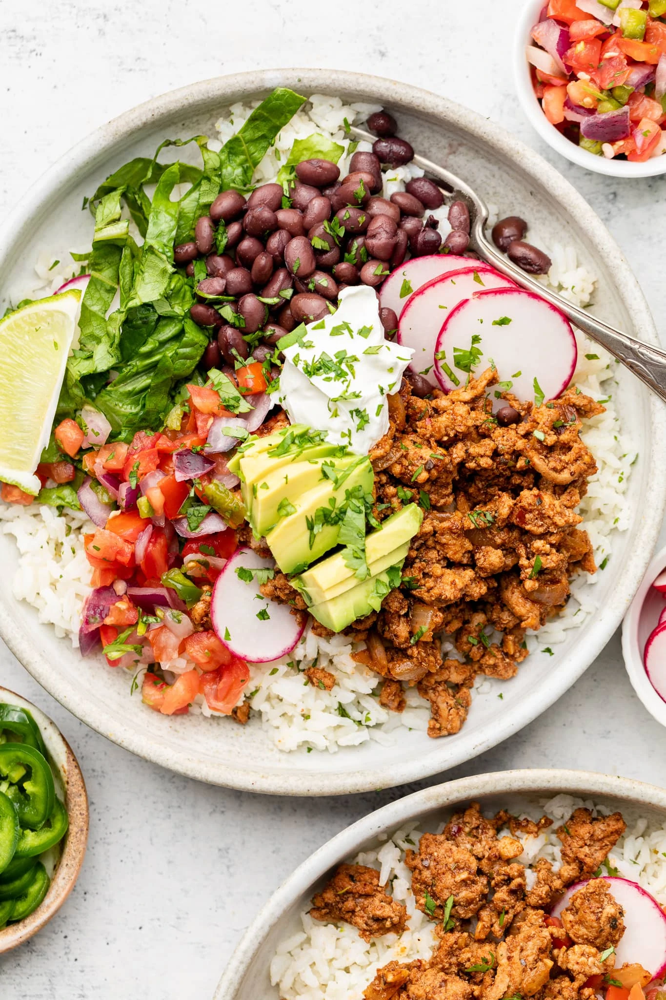

Chipotle Bowl

Healthy Chipotle Alternative
This is another great, healthy meal prep you can make for the week.
The great thing about this one is, it's a bit easier to make and you
can also simply throw into the microwave whenever you're hungry.
Ingredients
100g Jasmine Rice
120g Black Beans
6oz 97/7 Lean Ground Turkey
1.5 Cups Shredded Lettucs
2 TBSP Light Sour Cream
2 TBSP Salsa
3 Packets of Taco Seasoning
Steps
- Put all the ground turkey into a big enough pot
and set the stove on high
- Stir until cooked properly and add taco seasoning
- Cook your jasmine rice in the meantime
- Equally seperate ground turkey into 5 meal prep containers
- Equally seperate jasmine rice into containers
- When ready to eat, att 1.5 cups of shredded lettuce,
120g black beans, 2 tbsp light sour cream and salsa.
Macros
Seperated into 5 containers, each will contain 651 calories with
55 grams of carbs